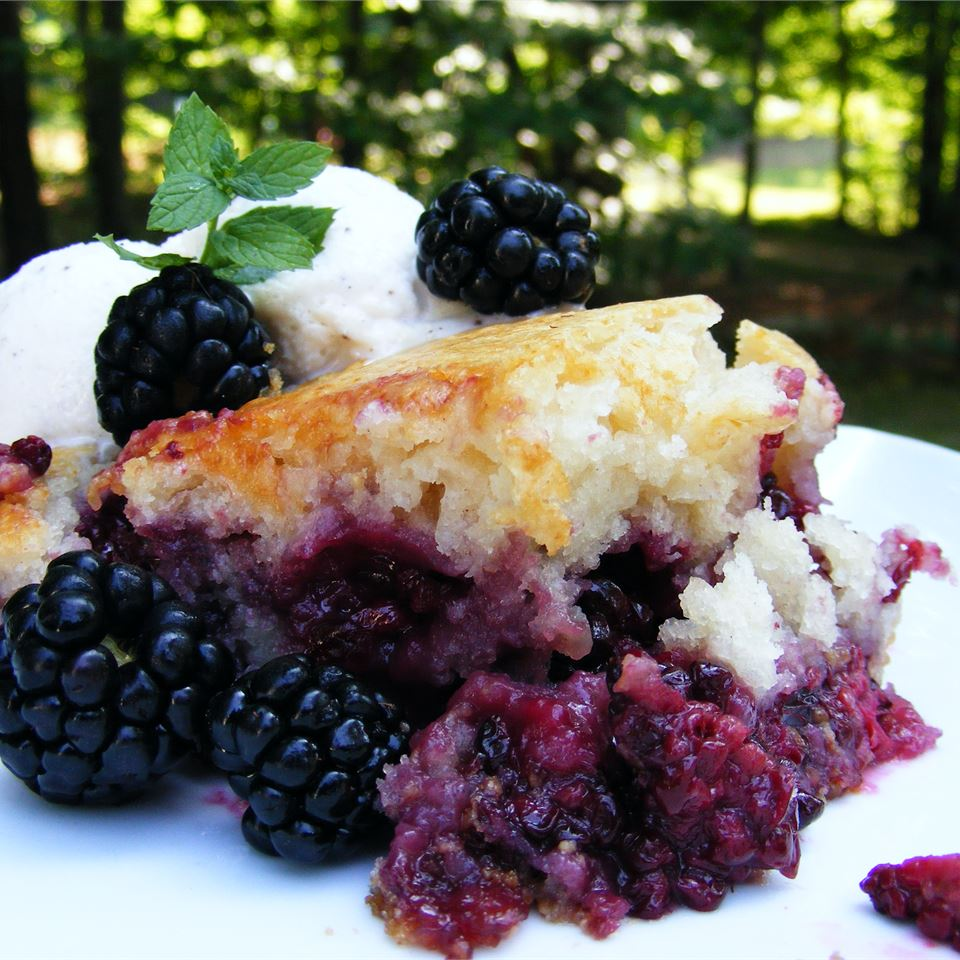

blackberry cobbler

You will love this Blackberry Cobbler
Easy blackberry cobbler. My father-in-law grows huge blackberries and always has tons. I tried a number of recipes and none really hit the spot. So created this one and it worked so well that my fiance said it was the best she had ever had. Serve warm with heavy or whipped cream.
Ingridients
- ½ cup white sugar
- 2 tablespoons cornstarch
- 6 cups fresh blackberries
- ¼ cup melted butter
- 2 ½ cups all-purpose flour
- 1 ½ cups white sugar
- 1 tablespoon baking powder
- 1 teaspoon salt
- 2 cups milk
- 1 tablespoon vanilla extract
- ¼ cup melted butter
Steps
-
Preheat an oven to 350 degrees F (175 degrees C). Lightly oil a 9x13-inch baking dish. Whisk 1/2 cup sugar with the cornstarch in a small bowl; set aside.
-
Place the blackberries into a mixing bowl, and drizzle with 1/4 cup of melted butter. Sprinkle with the cornstarch mixture, and toss to evenly coat. Spread the berries into the prepared baking dish. In a separate bowl, whisk together the flour, 1 1/2 cup sugar, baking powder, and salt until evenly blended. Stir in the milk, vanilla extract, and 1/4 cup melted butter until combined but still slightly lumpy. Pour the batter over the berries.
-
Bake in the preheated oven until the berries are tender and the crust is golden brown, 55 minutes to an hour.
Back to Main Page